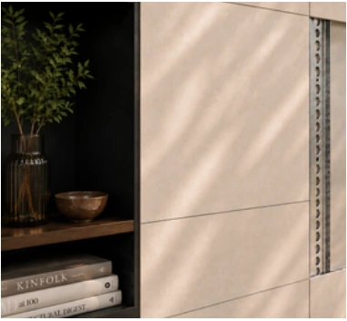
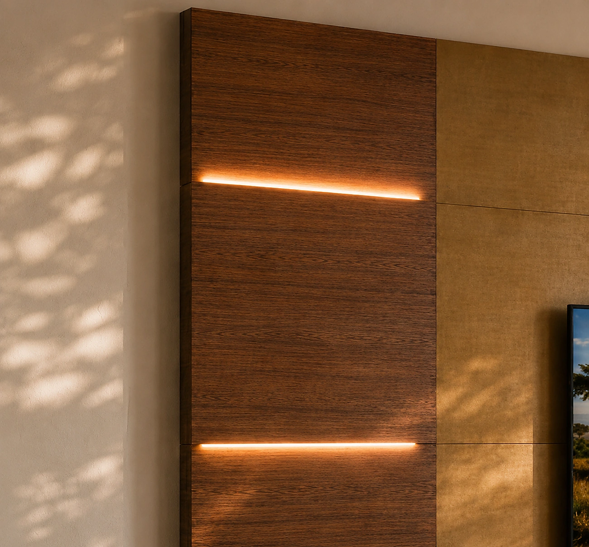
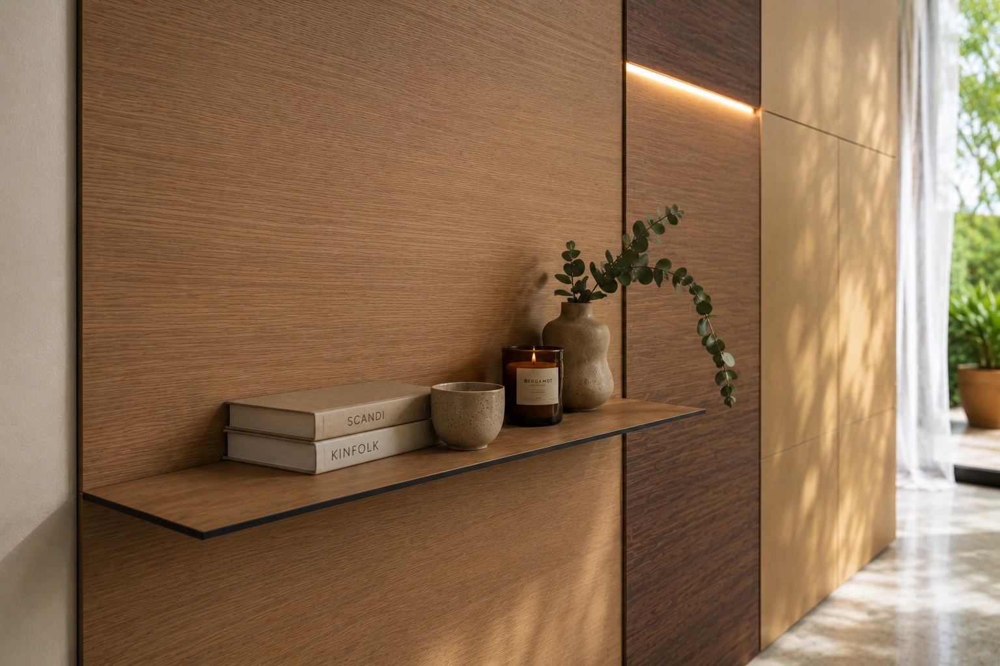
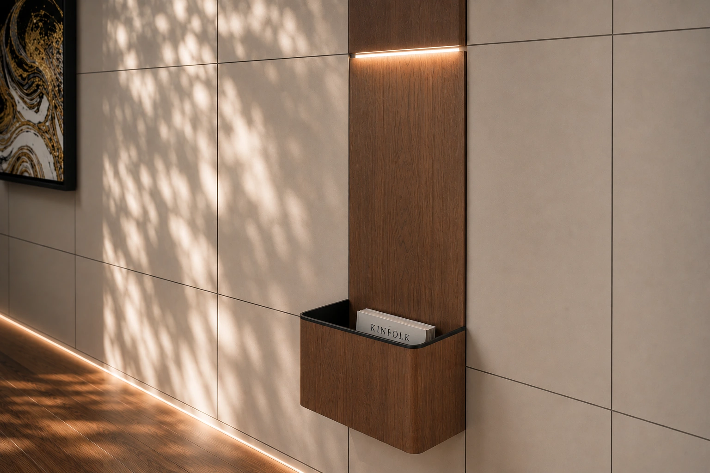
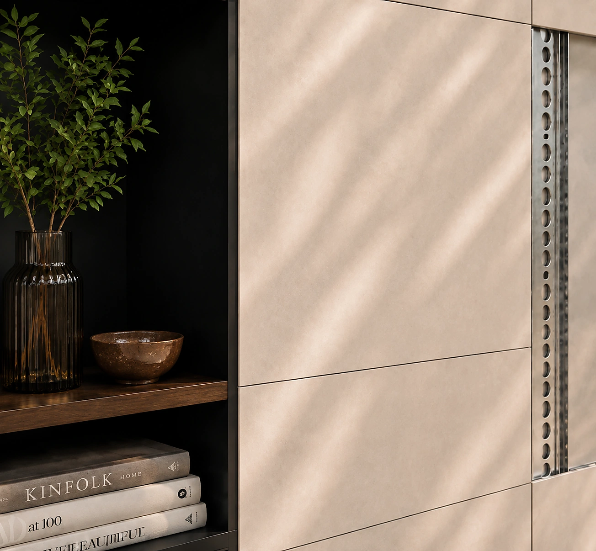

02 · Collezione
Cinque elementi.
Una sola architettura.
Cinque famiglie di pannelli, una sola logica compositiva: materia, luce e funzione si integrano nella stessa superficie.
Flat
La superficie continua. Il pannello che costruisce la base.
↘
02Lux
La luce integrata. Un segno luminoso che valorizza materia e profondità.
↘
03Shelf
Il piano sottile. Una funzione d’appoggio integrata alla parete.
↘
04Frame
Il vuoto abitabile. Un volume aperto per esporre, contenere, custodire.
↘ 05
05Box
Il contenitore. Una presenza discreta per aggiungere funzione senza appesantire.
↘

La base.
Continuità materica e libertà compositiva.
Flat è il pannello che costruisce il campo visivo della parete. Una superficie pulita, modulare e sostituibile, pensata per accogliere materia, colore e texture senza interrompere il progetto.
La luce.
Illuminazione integrata, senza cavi visibili.
Lux introduce luce nella parete senza trasformarla in un impianto a vista. Il pannello rimane parte del sistema, ma aggiunge profondità, atmosfera e orientamento visivo.
Il piano.
La parete diventa superficie d’appoggio.
Una mensola sottile nasce dalla stessa logica del pannello: discreta, magnetica, riposizionabile. Aggiunge funzione senza introdurre mobili o staffe visibili.
Il vuoto.
Un volume aperto, disegnato nella parete.
Frame crea uno spazio contenitivo leggero, senza chiudere la superficie. Espone, raccoglie e custodisce mantenendo il linguaggio modulare IconicWall.
Il volume.
Contenere senza appesantire.
Box aggiunge una funzione precisa alla composizione e può essere sostituito quando cambiano le esigenze. Un contenitore integrato, pensato per restare coerente con la parete.
La parete continua.
La funzione si muove.
Ogni elemento può cambiare posto, ruolo o finitura. La parete resta coerente.
Parliamo della tua parete →